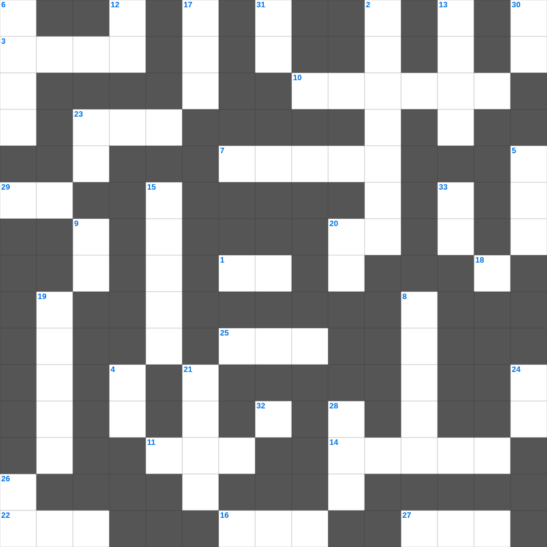

성경 속 과일과 식물
📌 서비스 정의
십자가로세로는 교회 주보와 주일학교에서 사용할 수 있는 성경 기반 가로세로 퍼즐 서비스입니다. 성경 인물, 사건, 핵심 구절을 바탕으로 제작되었습니다. 온라인 풀이 및 인쇄 기능을 제공합니다.
무료로 즐기는 성경 성경 말씀 퀴즈! 35개의 힌트로 구성된 가로세로 낱말 퍼즐입니다. PC와 모바일 모두 지원되며, 정답을 바로 확인할 수 있어 혼자서도 쉽게 풀 수 있습니다.

📝 가로 힌트
1. 병 고치는 은사와 이것을 행함
3. 바울이 복음을 전하다가 돌에 맞은 곳
7. 베드로가 예수님을 모른다고 세 번 부인한 후 들린 소리
10. 도끼가 물 위에 떠오른 기적
11. 모세가 가나안 땅을 바라본 산
14. 노아의 방주를 만든 나무
16. 니고데모와 예수님의 대화 주제
20. 땅 끝까지 이르러 내 이것이 되리라
22. 이사악의 아내
23. 제물을 태워 드리는 곳
25. 예수님이 세례받으신 강
27. 바울이 2년 동안 가르쳤던 서원
29. 하나님의 뜻을 전달하는 것
32. 모든 사람이 지은 근본적인 문제
📝 세로 힌트
2. 선한 사람이 강도 만난 자를 도와준 이야기
4. 잘못을 뉘우치고 하나님께 돌아오는 것
5. 가나 혼인잔치에서 물이 이것이 된 기적
6. 예수님이 나귀 새끼를 타고 입성하신 곳
8. 아브라함의 고향
9. 고라 자손의 반역 때 땅이 갈라짐
12. 쓴 물이 단물로 변한 곳
13. 떡 다섯 개와 물고기 두 마리로 오천 명을 먹이심
15. 열 가지 재앙 중 마지막 재앙
17. 야곱이 축복을 받기 위해 팔에 붙인 것
18. 야곱이 베개로 삼았던 것
19. 엠마오로 가던 두 제자가 예수님을 알아본 시점
20. 네 이웃에 대하여 거짓 이것하지 말라
21. 기뻐하라 내가 다시 말하노니 기뻐하라
23. 제물을 통째로 태워 드리는 제사
24. 불뱀에 물린 자들이 이것을 보면 살았다
26. 하나님은 모든 사람이 구원을 받으며 이것을 아는 데 이르기를 원하시느니라
28. 예수님이 십자가에 못 박히신 곳
30. 단련하신 후에는 내가 이것 같이 나오리라
31. 예수님이 예루살렘 입성 때 타신 것
🧑🏫 교회 교육 자료 활용
이 퍼즐은 주일학교 교재 추천 자료로 활용할 수 있고, 주일학교 주보에 넣기 좋은 분량으로 구성되어 있습니다. 수업용 주일학교 교안에 활동지로 붙이거나, 예배 후 복습용 주일학교 공과교재로 바로 사용할 수 있습니다.
🏷️ 키워드
성경 말씀 퀴즈, 성경, 십자가로세로, 성경퀴즈, 말씀퀴즈, 가로세로퍼즐, 주일학교 교재 추천, 주일학교 주보, 주일학교 교안, 주일학교 공과교재